搜索解答
目前已完成到 2.5
1.3.49
上次更新：2019-02-11
题目
1.3.49
栈与队列。
用有限个栈实现一个队列，
保证每个队列操作（在最坏情况下）都只需要常数次的栈操作。
解答
那么这里就使用六个栈来解决这个问题。
这个算法来自于这篇论文。
原文里用的是 Pure Lisp，不过语法很简单，还是很容易看懂的。
先导知识——用两个栈模拟一个队列
如何使用两个栈来模拟一个队列操作？
这是一道很经典的题目，答案也有很多种，这里只介绍之后会用到的一种方法。
首先我们有两个栈，H 和 T，分别用作出队和入队用。
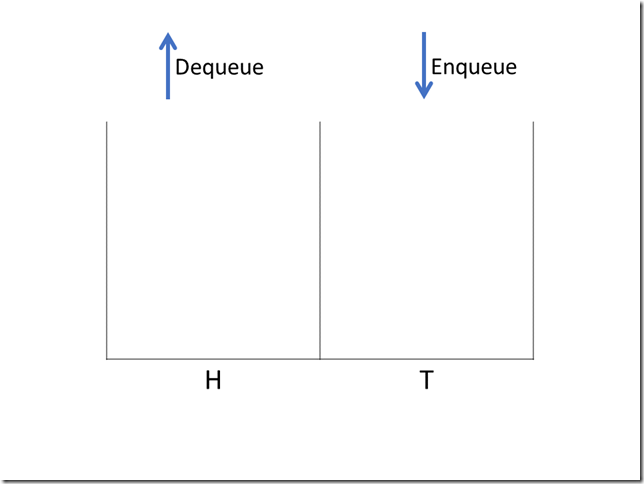
这样，入队操作等同于向 T 添加元素，T 的入栈操作只需要 O(1) 时间。
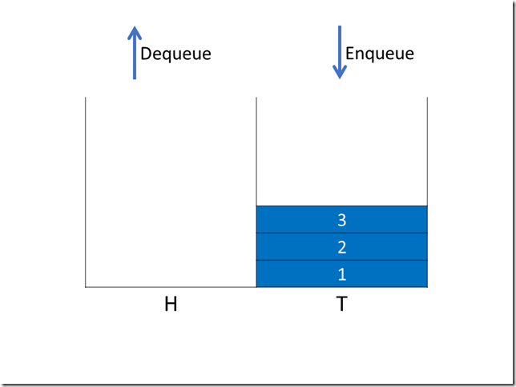
如果 H 不为空，出队操作等同于 H 弹栈，H 的弹栈操作也只需要 O(1) 时间。
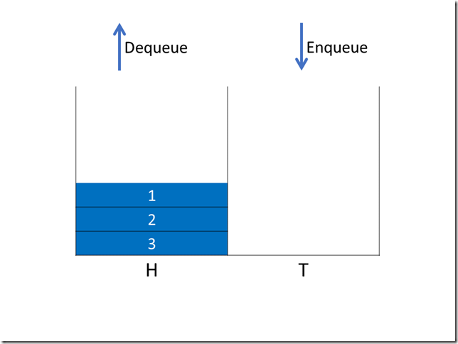
但如果 H 为空，则需要将 T 中的元素依次弹出并压入到 H 中，这是一个 O(n) 的操作。
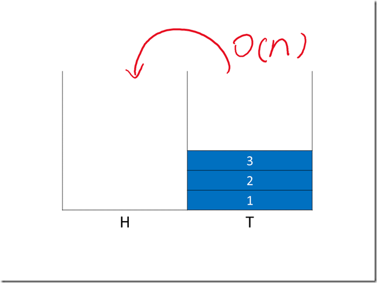
显然，这种方式中，出队操作的最坏时间复杂度是 O(n)，并不满足题目要求。
分摊 O(n)
那么，怎么解决这个问题呢？
一个很自然的想法是，如果在栈 H 变为空之前，我们就能逐步将栈 T 的内容弹出并压入到另一个栈 H’ 中，等到栈 H 为空时，直接交换 H 和 H’ 即可。
假设目前的队列状态是这样，有三个元素等待出队，还有三个元素等待入队。
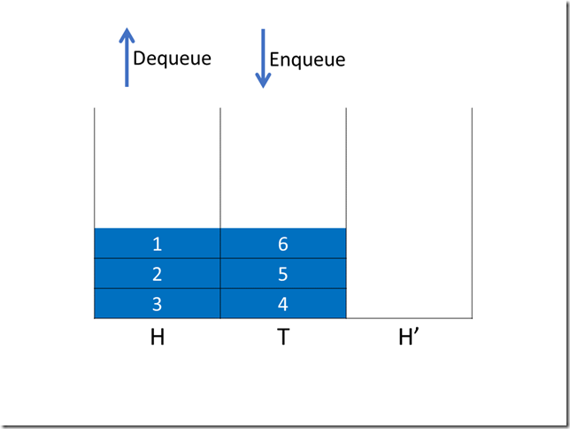
现在依次让三个元素出队，与此同时我们让栈 T 中的元素依次进入 H’ 中。
每一次出队都执行两个操作，元素出队和元素复制（Pop & Push），时间复杂度 O(1) + O(1) + O(1) = O(1)。
第一次操作（出队）
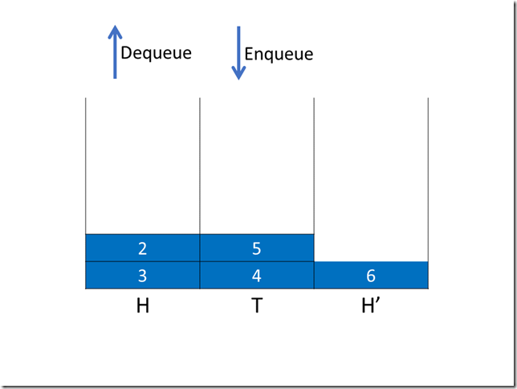
第二次操作（出队）
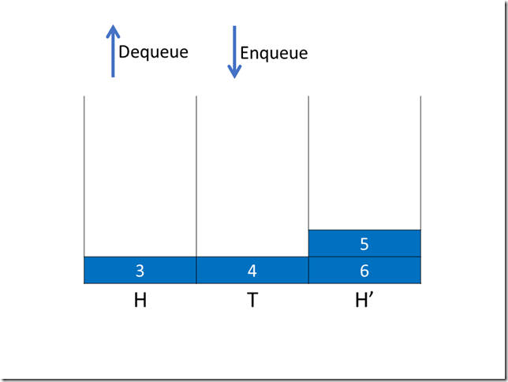
第三次操作（出队）
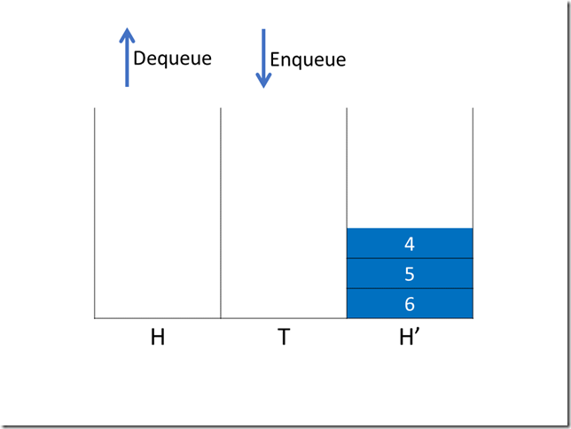
现在栈 H 和栈 T 都为空，下一次出队操作时，我们直接交换栈 H 和栈 H’（由于是交换引用，因此时间复杂度仍为 O(1)）。
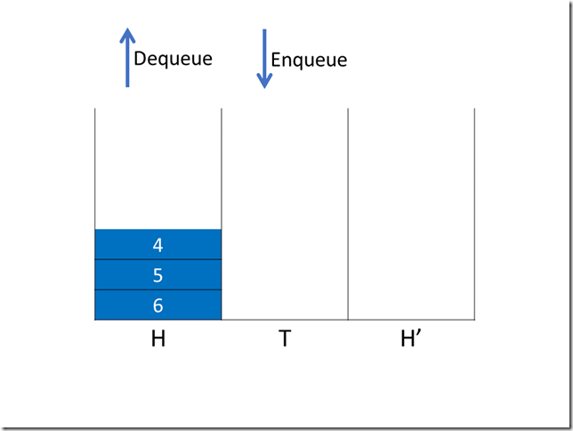
之后再进行出队操作。
这就是这个算法基本想法，在栈 H 变为空之前，分步将栈 T 中的内容分步复制到另一个栈中。
当栈 H 为空时直接用准备好的栈 H’ 替代 H，保证时间复杂度为常数。
对复制时 Enqueue 的支持和 T’ 的引入
刚才是一种理想情况，显然我们的队列在复制时不可能只发生出队操作，为了增加对入队操作的支持，我们引入临时栈 T’。
例如我们有队列状态如下，现在启动复制进程，入队操作全部由 T’ 完成。
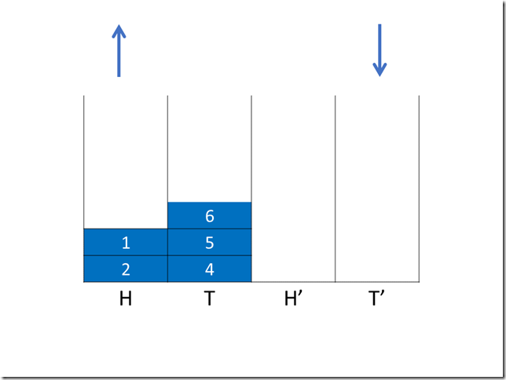
我们进行一次入队操作和两次出队操作，如下组图所示：
第一次操作（入队）
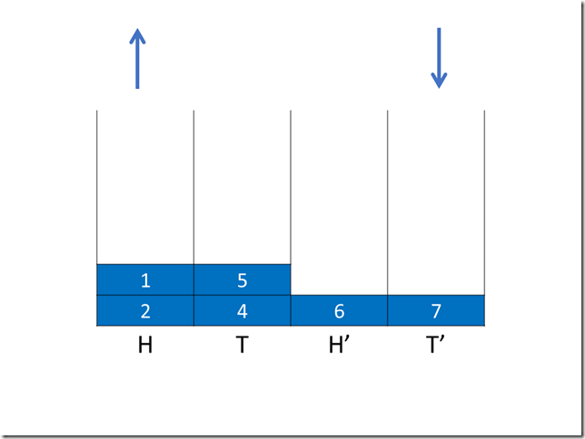
第二次操作（出队）
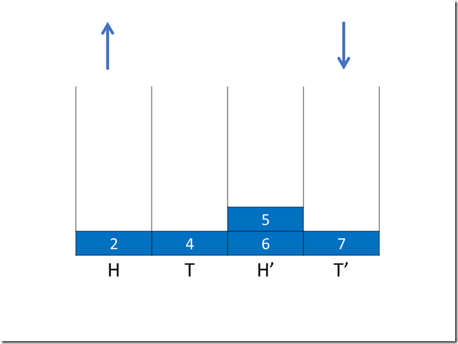
第三次操作（出队）
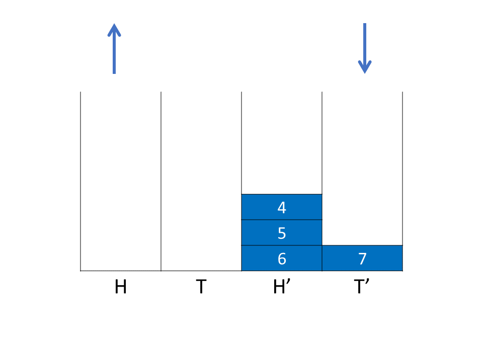
现在 H 和 T 均为空，下一次操作时（不论入队还是出队），我们先交换 H 和 H’ 以及 T 和 T’，同时让入队操作控制权回到 T。
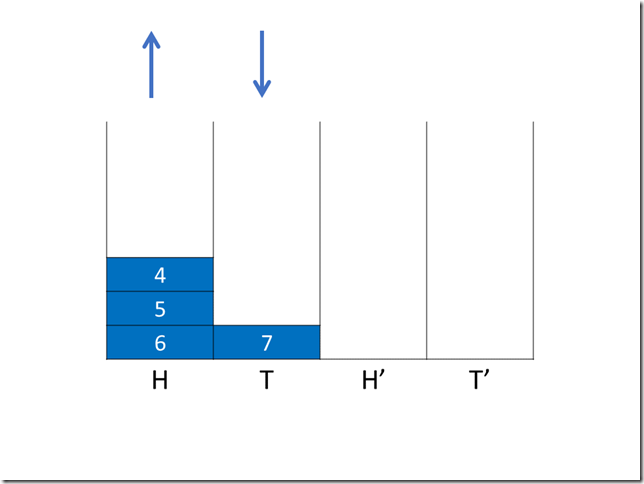
这样，我们增加了对复制时入队操作的支持，但还并不完全，只有在理想情况下才可以做到。
h 与 HR ，对复制时出入队序列支持的扩展
在之前的例子中，当复制结束时 H 总是为空的，现在我们来讨论一下复制结束时 H 不为空的情况。
如果复制结束时 H 不为空，直接交换的结果是我们丢失了原来栈 H 中的数据。
因此，在翻转 T 的同时，我们还应翻转 H 到 HR，并在最后将 HR 的内容再度翻转并添加到 H’ 上。
这个过程可以以下图方式进行：
初始状态：
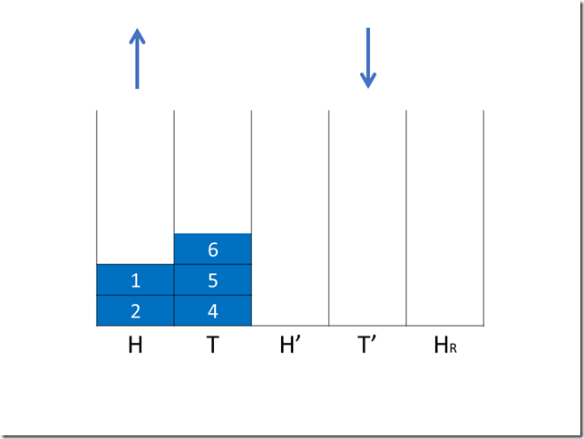
第一次操作（入队），H->HR ,T->H’，时间复杂度 O(1) + O(1) + O(1) + O(1) + O(1) = O(1)。
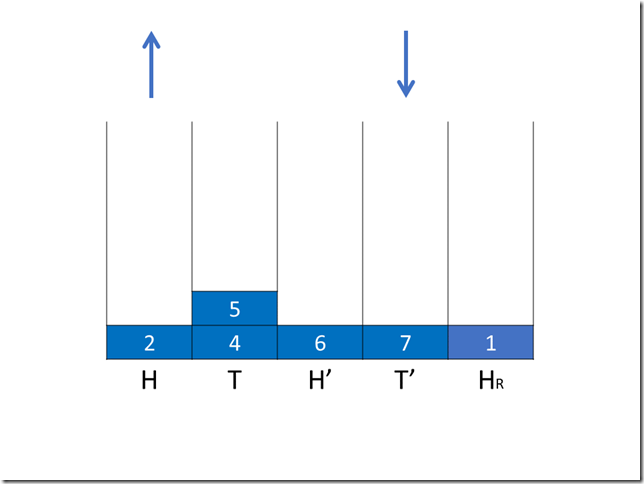
第二次操作（入队）
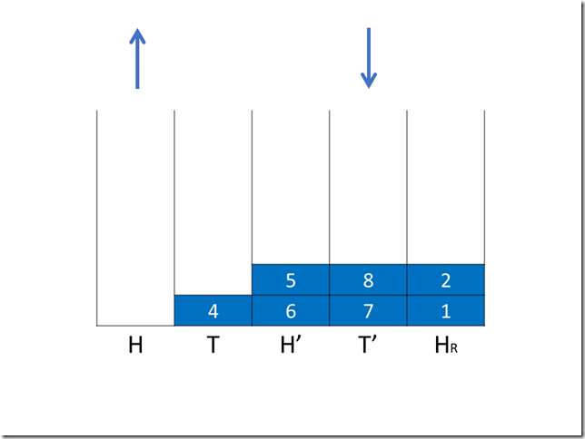
第三次操作（入队）
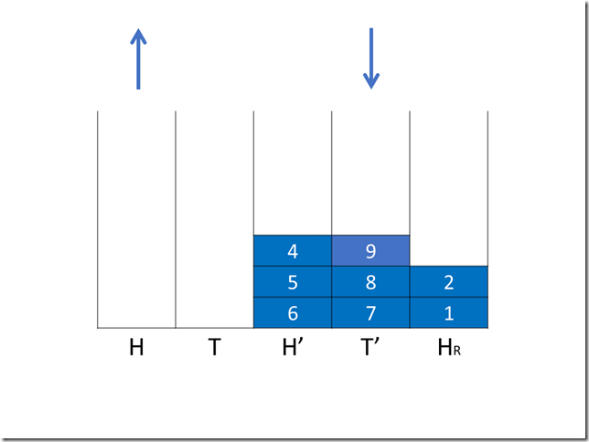
第四次操作（入队）
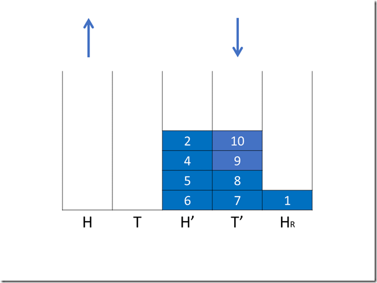
第五次操作（入队）
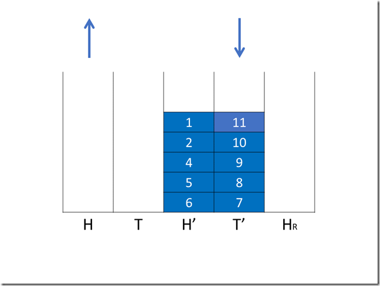
第六次操作（出/入队执行前）
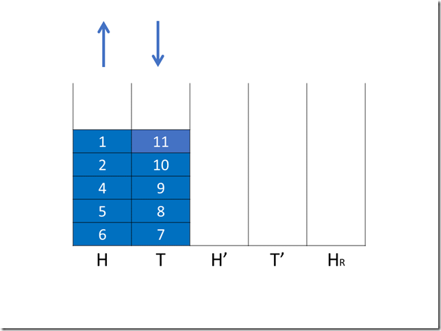
这样我们就解决了 H 复制结束后不为空的问题，代价是引入了两个额外的问题：
问题一：操作次数增加到了 2k 次，k 代表栈 T 中的元素数量。（如果当 T 中元素数量大于 H 中元素数量时开始复制）
问题二：由于 H 被用于复制进程，我们无法在复制过程中支持出队操作。
第一个问题解决方案比较简单，我们可以在每一次出/入队操作执行时进行两次的复制步骤（对 T 和 H 进行两次的 Pop 操作），时间复杂度仍为 O(1)。
第二个问题我们通过引入栈 h 来解决。
h 用于在复制时代替 H 执行出队功能，它会在复制开始时自动变为栈 H 的一个浅拷贝（也就是说，h 和 H 共用同一片内存空间，但它们用于指示栈顶位置的指针相互独立）。
现在我们有了全部 6 个栈，它们的功能如下图所示（为了方便介绍我将一些栈的位置做了调换）。
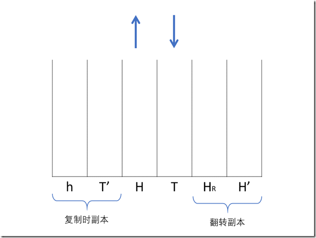
由于我们并不能预知接下来会发生的操作，因此当 H 栈中的元素数量第一次小于 T 栈中的元素数量时，我们就必须启动复制进程了（总是假设接下来全部都是出队操作）。我们引入一个布尔类型变量 IsCopying 来指示复制进程。
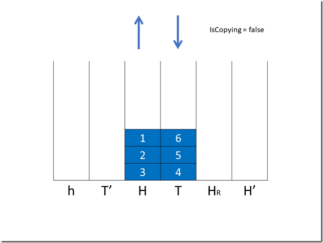
现在我们进行第一次入队操作，IsCopying = true，开始复制。
首先 h 变为 H 的浅拷贝，这个过程是 O(1) 的。
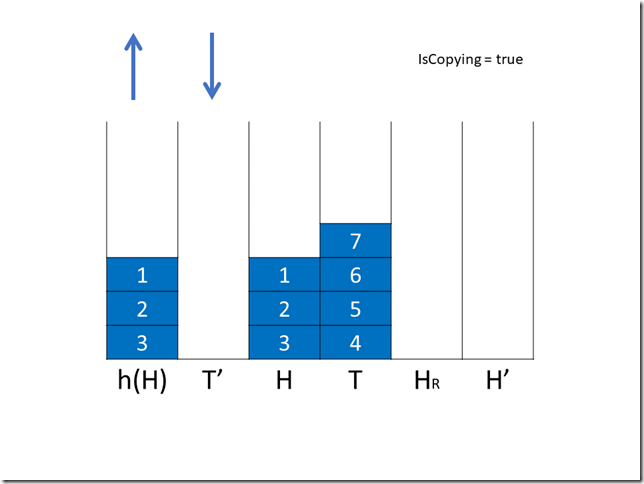
如果在复制过程中有出队操作，作为 H 的翻转 HR 中就有一个元素不再需要复制，我们引入一个变量 needcopy 来记录 HR 中需要复制的元素数量。
接下来是两次复制操作，T 和 H 分别有两个元素进入了 H’ 和 HR 。
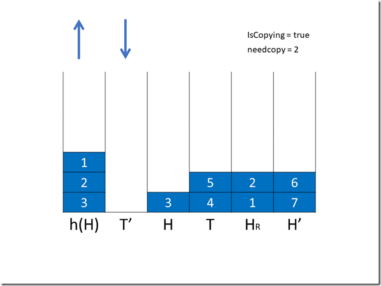
然后是第二次出/入队操作，这次我们选择出队，1 出队后显然 HR 中的 1 不再需要复制，needcopy – 1。
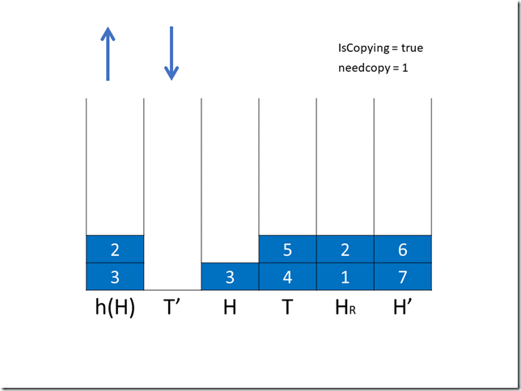
随后再是两次复制操作，第一次将 H 中的 3 移到 HR 中，needcopy + 1，T 中的 5 移到 H’ 中；第二次只将 T 中的 4 移到 H’ 中。
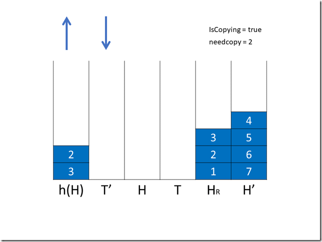
第三次出/入队操作我们选择入队，8 入队。随后 HR 中的两个元素进入了 H’，needcopy – 2。
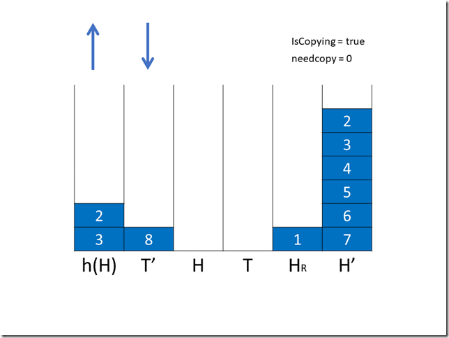
由于 needcopy 变成了 0，我们再额外进行一次交换操作，并将 IsCopying 置为 false。
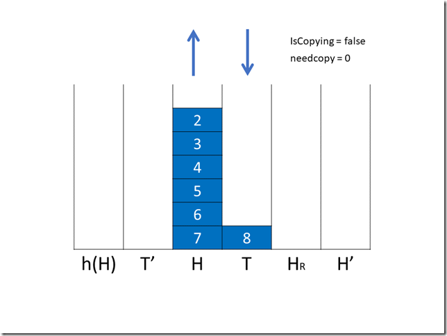
至此，完整的算法运行完毕。
有关复制开始时机的证明
这里我们选择了在第 k + 1 个元素入队时开始复制，现在证明一定能够在 h 空之前完成复制：
假设复制开始时 H 有 k 个元素，T 有 k + 1个元素。
完成第一轮复制（H->HR , T->H’）需要 k + 1 次操作，
完成第二轮复制（H->H’）需要 k 次操作，总共需要 2k + 1 次操作才能完成复制。
而 h 的长度为 k，能够提供 2k 次的操作机会。第 k + 1 个元素入队时也能提供 2 次操作机会，因此一共是 2k + 2 次操作机会。
由于 2k + 1 < 2k + 2，我们证明了该算法能够及时完成复制工作。
程序设计
根据之前的内容，我们可以开始设计程序了。主要实现三个功能，Enqueue(), Dequeue() 和 Peek()。
根据算法要求我们添加一个进行复制时操作的函数 OneStep()，用于执行元素的复制，栈交换等操作。
Peek() 只需要根据是否在进行复制选择栈 h 或栈 H 进行 Peek()。
Enqueue()
1. 如果不处于复制状态
1. 如果 H.Length – T.Length > 0，直接将元素压入栈 T。
2. 否则令 IsCopying = true，h 进行浅拷贝，进行两次的 OneStep。
2. 如果处于复制状态，将元素压入 T'，进行两次的 OneStep
Dequeue()
1. 如果不处于复制状态
1. 如果 H.Length – T.Length > 0，直接从 H 弹出元素。
2. 否则从 H 弹出元素，IsCopying = true，h 进行浅拷贝，进行两次的 OneStep。
2. 如果处于复制状态，从 h 弹出元素，needcopy - 1，进行两次的 OneStep。
OneStep()
1. 如果不处于复制状态，什么也不做。
2. 如果处于复制状态。
1. 如果 H 和 T 都不为空，从 H 搬运一个元素至 HR ，从 T 搬运一个元素至 H' ，needcopy + 1。
2. 如果 H 为空但 T 不为空，从 T 搬运一个元素至 H' 。
3. 如果 H 和 T 都为空，但 needcopy > 1，从 HR 搬运一个元素至 H' ，needcopy – 1。
4. 如果 H 和 T 都为空，但 needcopy = 1，从 HR 搬运一个元素至 H' ，needcopy – 1，交换 H 和 H' 以及 T 和 T'，其他栈置空，退出复制状态。
5. 如果 H 和 T 都为空，但 needcopy = 0，交换 H 和 H' 以及 T 和 T'，其他栈置空，退出复制状态。
代码
using Generics;
namespace _1._3._49
{
class StackQueue<Item>
{
Stack<Item> H;
Stack<Item> T;
Stack<Item> h;
Stack<Item> HH;
Stack<Item> TT;
Stack<Item> Hr;
bool isRecopying;
int nowcopying;
public StackQueue()
{
this.isRecopying = false;
this.nowcopying = 0;
this.H = new Stack<Item>();
this.T = new Stack<Item>();
this.h = new Stack<Item>();
this.HH = new Stack<Item>();
this.TT = new Stack<Item>();
this.Hr = new Stack<Item>();
}
public Item Peek()
{
if (this.isRecopying)
{
return h.Peek();
}
else
{
return H.Peek();
}
}
public void Enqueue(Item item)
{
if (!this.isRecopying && Lendiff() > 0)
{
this.nowcopying = 0;
this.T.Push(item);
}
else if (!this.isRecopying && Lendiff() == 0)
{
this.T.Push(item);
this.isRecopying = true;
this.h = this.H.Copy();
OneStep(OneStep(this));
}
else if (this.isRecopying)
{
this.TT.Push(item);
OneStep(OneStep(this));
}
}
public int Lendiff()
{
return this.H.Size() - this.T.Size();
}
public Item Dequeue()
{
if (!this.isRecopying && Lendiff() > 0)
{
return this.H.Pop();
}
else if (!this.isRecopying && Lendiff() == 0)
{
Item temp = this.H.Pop();
this.h = this.H.Copy();
this.isRecopying = true;
OneStep(OneStep(this));
return temp;
}
else
{
Item temp = this.h.Pop();
this.nowcopying--;
OneStep(OneStep(this));
return temp;
}
}
private static StackQueue<Item> OneStep(StackQueue<Item> q)
{
if (q.isRecopying && !q.H.IsEmpty() && !q.T.IsEmpty())
{
q.nowcopying++;
q.HH.Push(q.T.Pop());
q.Hr.Push(q.H.Pop());
}
else if (q.isRecopying && q.H.IsEmpty() && !q.T.IsEmpty())
{
q.isRecopying = true;
q.HH.Push(q.T.Pop());
}
else if (q.isRecopying && q.H.IsEmpty() && q.T.IsEmpty() && q.nowcopying > 1)
{
q.isRecopying = true;
q.nowcopying--;
q.HH.Push(q.Hr.Pop());
}
else if (q.isRecopying && q.H.IsEmpty() && q.T.IsEmpty() && q.nowcopying == 1)
{
q.isRecopying = false;
q.nowcopying--;
q.HH.Push(q.Hr.Pop());
q.H = q.HH;
q.T = q.TT;
q.HH = new Stack<Item>();
q.TT = new Stack<Item>();
q.Hr = new Stack<Item>();
q.h = new Stack<Item>();
}
else if (q.isRecopying && q.H.IsEmpty() && q.T.IsEmpty() && q.nowcopying == 0)
{
q.isRecopying = false;
q.H = q.HH;
q.T = q.TT;
q.HH = new Stack<Item>();
q.TT = new Stack<Item>();
q.Hr = new Stack<Item>();
q.h = new Stack<Item>();
}
return q;
}
}
}
另请参阅
StackOverflow-How to implement a queue with three stacks?——Stack Overflow 上关于这个问题的讨论。
Real Time Queue Operation in Pure LISP-Robert Hood, Robert Melville——用六个栈实现常数操作队列的论文。